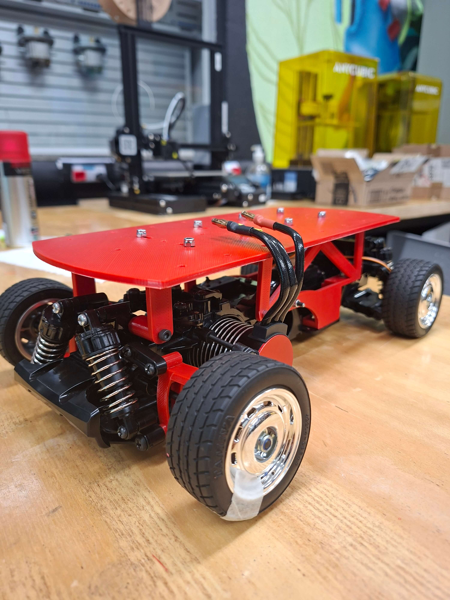
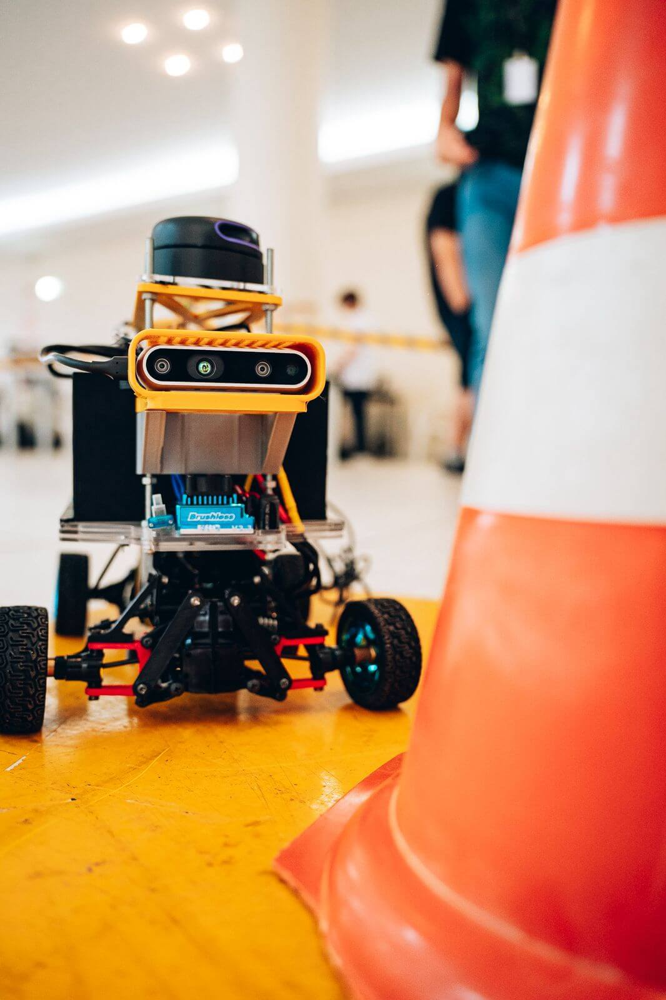
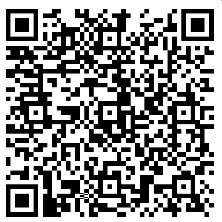

QUE SOMOS?
Bem-vindos à LUNAR, a liga universitária da Instituto de Ciência e Tecnologia UNESP - Câmpus de Sorocaba focada em robótica avançada e navegação autônoma.
Nosso propósito é impulsionar a tecnologia unindo a prática da engenharia ao rigor científico. Somos movidos pelo desafio de desenvolver sistemas inteligentes e autônomos, transformando o conhecimento da sala de aula em inovação tecnológica real.
Explore nosso site para conhecer nossos projetos, conquistas e pesquisas que estão moldando o futuro da automação!


O QUE FAZEMOS?
Competição
Testamos nossos limites no mundo real. Desenhamos, programamos e construímos protótipos robóticos de alto desempenho para disputar as principais competições acadêmicas do país e do mundo. Esses desafios práticos nos obrigam a buscar a excelência em mecânica, eletrônica e algoritmos, além de fortalecer o trabalho em equipe sob pressão.
Pesquisa
Pesquisa Aplicada: Coletamos dados rigorosos dos nossos protótipos de competição para publicar artigos científicos, otimizar desempenhos futuros e validar novas tecnologias de navegação.
Projetos Focados em Pesquisa: Desenvolvemos robôs experimentais livres das regras das competições. Esses protótipos exclusivos são criados puramente para a exploração científica, permitindo testes avançados em Inteligência Artificial, visão computacional e tomada de decisão autônoma.
Nossa História
Como tudo começou
Fundada em 2024, a LUNAR nasceu como um desdobramento direto da HumaMaquina, uma equipe de competição que havia sido fundada em 2023.
Nossa primeira participação oficial foi na renomada Competição Brasileira de Robótica (CBR) em Salvador, atuando na modalidade Very Small Size Soccer (VSSS).
Após essa valiosa experiência competitiva, unimos forças e conseguimos oficializar a fundação da Liga no câmpus. Todo o nosso desenvolvimento tecnológico e acadêmico ocorre sob a orientação essencial do Professor Dr. Félix Maurício Escalante Ortega.
Pesquisa

Competições

Entre em Contato
Apoie a LUNAR
Torne-se um Parceiro do Nosso Projeto
O apoio de empresas e patrocinadores é fundamental para que a LUNAR continue a desenvolver robôs de alta performance para levar a nossa equipa para grandes competições nacionais e internacionais.
Ao investir na LUNAR, a sua marca conecta-se diretamente à inovação tecnológica, à excelência académica da UNESP e à formação da próxima geração de engenheiros e cientistas.

Pix: lunar.tesouraria@gmail.com
Obrigado pelo seu apoio!